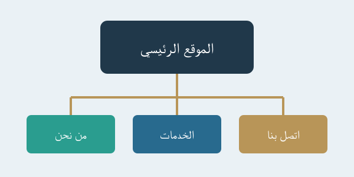

اسم الطالبة: شهد ساجد بدر الدين عبد الحليم حسن
الرقم الجامعي: 2501532
يعتبر التخطيط للمواقع الإلكترونية من أهم الخطوات التي تسبق إنشاء أي موقع إلكتروني، حيث يساعد على تحديد الهدف من الموقع وتنظيم محتوياته وصفحاته.
ويهدف التخطيط إلى إنشاء موقع سهل الاستخدام، منظم، ويستطيع الزائر الوصول إلى المعلومات التي يحتاجها بسهولة.
يساعد التخطيط الجيد للمواقع الإلكترونية على تنظيم المعلومات وتحسين شكل الموقع وتوفير الوقت والجهد أثناء عملية التصميم والبرمجة.
المرحلة الأولى: تحديد الهدف من الموقع.
المرحلة الثانية: تحديد الجمهور المستهدف.
المرحلة الثالثة: جمع المعلومات والمحتوى.
المرحلة الرابعة: تنظيم صفحات الموقع.
المرحلة الخامسة: تصميم شكل الموقع.
المرحلة السادسة: تنفيذ الموقع واختباره.
يجب أن يحتوي الموقع الإلكتروني الناجح على محتوى مفيد وتصميم مناسب وروابط واضحة، بالإضافة إلى سهولة التصفح والتوافق مع الهواتف وأجهزة الكمبيوتر.

| المرحلة | المهمة | النتيجة |
|---|---|---|
| تحديد الهدف | معرفة الغرض من الموقع | هدف واضح |
| جمع المعلومات | تجميع المحتوى | معلومات منظمة |
| التصميم | تحديد شكل الصفحات | موقع منظم |
| التنفيذ | كتابة الأكواد | موقع جاهز |
في النهاية، يعتبر التخطيط للمواقع الإلكترونية خطوة أساسية لنجاح أي موقع، لأنه يساعد على تنظيم المعلومات وتسهيل الاستخدام وتقليل الأخطاء، كما يساهم في تقديم موقع إلكتروني متميز يحقق أهدافه.